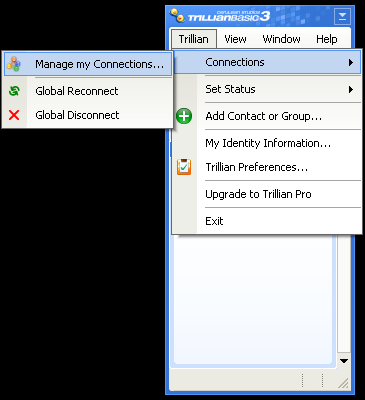

Trillian
¿Qué es Trillian?
Trillian es un cliente completo de mensajería que soporta AIM, ICQ, MSN, Yahoo Messenger e IRC.
Después de instalar Trillian
Tras completar la instalación, deberá crear un perfil de usuario para Trillian. Después se iniciará por primera vez.
Haga click en "Trillian" en la ventana principal y, a continuación, haga lo mismo en "Connections" -> "Manage my connections" para ir a la ventana de conexiones adicionales.

Cuando esté ahí, pinche en "Add a new connection" seguido del botón "IRC".

Aquí tendrá que introducir la información tal y como se muestra en la siguiente figura (recuerde cambiar los nombres e información de usuario). Si quiere que el IRC se conecte automáticamente al ejecutar el programa, marque la casilla correspondiente.

Tras ello, deberá hacer click en el nuevo icono de IRC que ha aparecido (un círculo blanco debajo del icono de usuario) y después presione "Join a channel...". Introduzca "#travian" (sin comillas pero con almohadilla) y confirme presionando Ok para entrar en el canal internacional de Travian. Puede entrar también al canal oficial de Travian.net: #travian.net

Al final, aparecerá una ventana similar a la de se muestra aquí debajo.

¡Enhorabuena! Se ha conectado correctamente a la red de IRC de Travian.